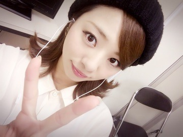
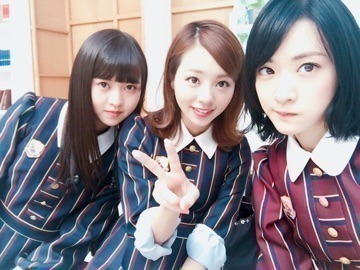
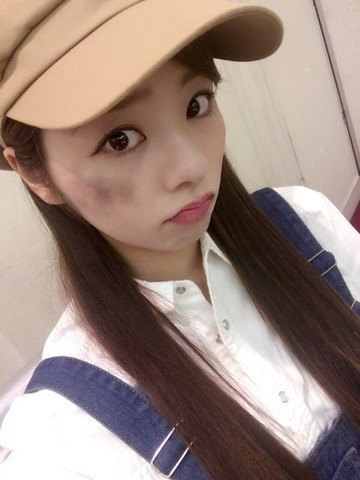

| 2016/11 16 Wed | 髪の毛の扱いに慣れたよ。まひろ |
おつかれさま♡

ろってぃーだよ。
こないだ95年組で会を開いたよ♡
途中から小百合も参加したり...
凄い楽しかったなぁぁ。
万理華 真洋 生駒

ぁぁぁ♡ 第2回のご飯会楽しみよ。

そんな感じでそんな感じでっ、、、
個別握手会，最終申し込みが近ずいておりますよ！！！ １７日（木）～１８日（金）１４時までだよ！☆☆☆
少しでも私に興味を持ってくださっている優しいお人々さん。会いに来てぇ～╰(*´︶`*)╯♡
因み，音楽！ファッション！帽子！ダンス！絢香さん！カフェ！料理！等等... こう言った物が大好きなのでこう言った話もしたいですし，逆に自分に無い趣味，特技，価値観，発想を聞くのも趣味なので是非お話し聞かせてください～♫
そしてそして～笑
『NOGIBINGO7』アルバイト編チェックしましたか～？？
ガソリンスタンドのバイト最高だった． マクドナルドのバイトは... コーラが溢れ出たよ。。
ポテトも何とかこぼさずに... ぇ、持ち方イケてたよね？笑
新曲『ブランコ』のMVでさ、皆がそれぞれ戦える武器を持ってるの。
でもね，何故だろう。私だけ、、、
「掃除機」
どーして。笑
監督が武器を割り振ってくれたんだけど どうやら掃除機が1番お気に入りらしいの。笑
掃除機だと，オバケしか吸えない♡笑
撮影日は掃除機をしょったりおろしたりしてる自分が何だか面白かったよ。

でもさでもさ！！
今回の衣装がオーバーオールだったって事は本当に最高だね。 特にRotty夢☆の方は，オーバーオール&ツナギとか好きな人多いから良かったんじゃないかな？
１２月のアンダーXmasLiveはさ、、皆オーバーオールで来ない？？笑 絶対可愛いじゃん♡、、、 オーバーオール率高めのLive。 動きやすいし可愛いね。笑
以上♡ ろってぃーでちた。
コメント(212)
2016/11/16 13:42